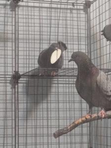

My pigeons names are:
I named them after characters from D&D podcasts. They both mean bird in some way or another, which I didn't know until later, so I named both of my birds, Bird on accedent.
My friend found them by the entrence to a Office Depo where they apparently had been sitting all day with no parent in sight. We tried to give them over to a wildlife sanctuary, but apparently all the pigeons you see around city's (which are normaly rock pigeons) are decendence from domestic pigeons that escaped, and because they aren't technecly wild and also not from the United States, wildlife rescuse can't take them. In the end, they ended up with me since they fledged too early, they ended up with me. They aren't the biggest fans of me, but they appricate the easy food and everything!
Sadly, Strix passed away suddenly on January 26, 2021.
